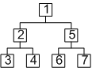
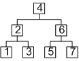
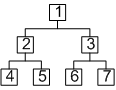

order


|
< index < 14. BSP toolkit < 14.4 Reading information from the tree |
===================================== | > 14.6 Destroying a tree |
C++ : class ITCODBspCallback {
public :
virtual bool visitNode(TCODBsp *node, void *userData) = 0;
};
bool TCODBsp::traversePreOrder(ITCODBspCallback *callback, void *userData)
bool TCODBsp::traverseInOrder(ITCODBspCallback *callback, void *userData)
bool TCODBsp::traversePostOrder(ITCODBspCallback *callback, void *userData)
bool TCODBsp::traverseLevelOrder(ITCODBspCallback *callback, void *userData)
bool TCODBsp::traverseInvertedLevelOrder(ITCODBspCallback *callback, void *userData)
C : typedef bool (*TCOD_bsp_callback_t)(TCOD_bsp_t *node, void *userData)
bool TCOD_bsp_traverse_pre_order(TCOD_bsp_t *node, TCOD_bsp_callback_t callback, void *userData)
bool TCOD_bsp_traverse_in_order(TCOD_bsp_t *node, TCOD_bsp_callback_t callback, void *userData)
bool TCOD_bsp_traverse_post_order(TCOD_bsp_t *node, TCOD_bsp_callback_t callback, void *userData)
bool TCOD_bsp_traverse_level_order(TCOD_bsp_t *node, TCOD_bsp_callback_t callback, void *userData)
bool TCOD_bsp_traverse_inverted_level_order(TCOD_bsp_t *node, TCOD_bsp_callback_t callback, void *userData)
Py : def bsp_callback(node, userData) : # ...
bsp_traverse_pre_order(node, callback, userData=0)
bsp_traverse_in_order(node, callback, userData=0)
bsp_traverse_post_order(node, callback, userData=0)
bsp_traverse_level_order(node, callback, userData=0)
bsp_traverse_inverted_level_order(node, callback, userData=0)
| Parameter | Description |
|---|---|
| node | In the C version, the node reference (generally, the root node). |
| callback | The function to call for each node. It receives the current node and the custom data as parameters If it returns false, the traversal is interrupted. |
| userData | Custom data to pass to the callback. |
| Pre order | In order | Post order | Level order | Inverted level order |
|---|---|---|---|---|
|  |  | |  | |
C++ : class MyCallback : public ITCODBspCallback {
public :
bool visitNode(TCODBsp *node, void *userData) {
printf("node pos %dx%d size %dx%d level %d\n",node->x,node->y,node->w,node->h,node->level);
return true;
}
};
myBSP->traversePostOrder(new MyListener(),NULL);
C : bool my_callback(TCOD_bsp_t *node, void *userData) {
printf("node pos %dx%d size %dx%d level %d\n",node->x,node->y,node->w,node->h,node->level);
return true;
}
TCOD_bsp_traverse_post_order(my_bsp,my_callback,NULL);
Py : def my_callback(node, userData) :
print "node pos %dx%d size %dx%d level %d"%(node.x,node.y,node.w,node.h,node.level))
return True
libtcod.bsp_traverse_post_order(my_bsp,my_callback)